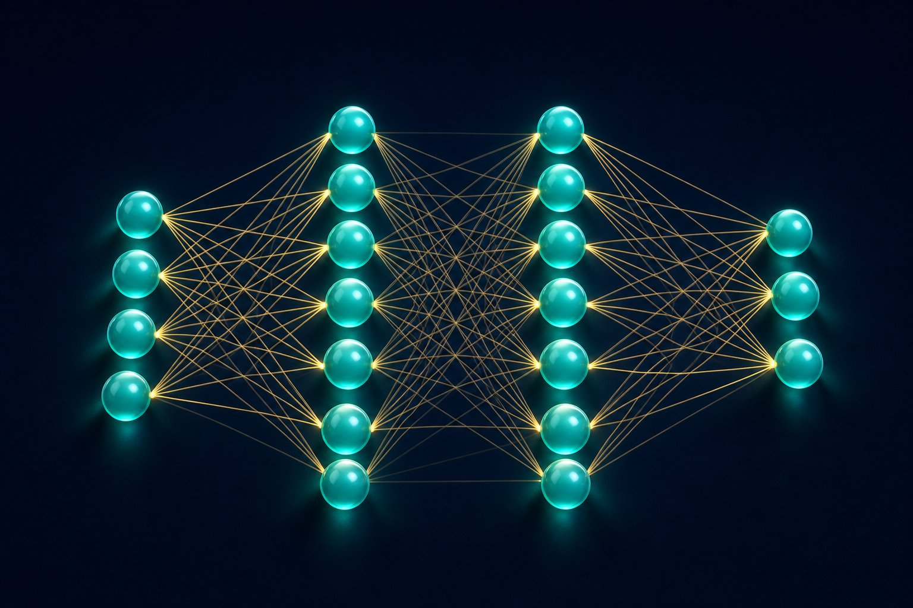

Neural networks
A neural net is a stack of linear maps and nonlinearities. Training is gradient descent on a loss, with gradients flowing backward.

Figure 10.1 — Input layer, hidden layers, output layer. Each edge is a weight.
Perceptron to MLP
A single neuron computes ŷ = φ(w·x + b). φ is an activation. One neuron with a step activation is the perceptron — it only separates linearly. A multilayer perceptron (MLP) stacks neurons so the whole net can approximate very wild functions (universal approximation, in theory, with enough width).
Activations
| Name | Shape | Notes |
|---|---|---|
| Sigmoid | S-curve to (0,1) | Saturates; vanishing gradients in deep stacks. Still used as a binary output. |
| Tanh | S-curve to (−1,1) | Zero-centred; still saturates. |
| ReLU | max(0, z) | Default hidden activation. “Dead ReLU” if a unit never turns on. |
| GELU / SiLU | Smooth ReLU-like | Common in Transformers. |
| Softmax | Vector → probabilities | Output of multi-class models. |
Forward pass, loss, backward pass
- Forward — compute predictions for a batch.
- Loss — compare to labels (e.g. cross-entropy).
- Backward — chain rule: each layer gets ∂L/∂w from the next layer’s error signal.
- Update — Adam, SGD+momentum, etc.
Minibatch SGD estimates the true gradient from 32–1024 examples. Noise from small batches can help escape sharp minima. Epoch = one pass through the training set.
What makes nets trainable
- Initialisation (too large → exploding activations).
- Normalisation (batch/layer norm) to keep activations well scaled.
- Residual connections (Chapter 11) so gradients have a highway.
- Learning-rate warmup and decay.
Short notes
Neuron = linear score + activation. Depth composes features. Train with backprop + SGD/Adam. ReLU is the default hidden activation; softmax at the end for classes. The “learning” is only the weight update. Architecture + data + optimisation must all work or you get a brick.
Point notes
- ŷ = φ(Wx + b), stacked.
- Backprop = chain rule on a computation graph.
- ReLU hidden, softmax out (classification).
- Batch, epoch, learning rate, optimiser.
- Vanishing/exploding gradients are optimisation failures.
MCQs
5 questions1. Without nonlinear activations, a deep stack of linear layers is equivalent to:
2. Backpropagation computes:
3. Softmax is typically used:
4. A “dead ReLU” unit:
5. An epoch is:
Practice questions
P1. A hidden layer maps R³ → R² with ReLU. Write the output for x=[1, 0, −1], W = [[1,2,0],[0,−1,1]], b=[0, 1].
Wx = [1·1 + 2·0 + 0·(−1), 0·1 + (−1)·0 + 1·(−1)] = [1, −1]. Add b: [1, 0]. ReLU: [1, 0].
P2. Training loss is NaN after a few steps. List four things you would inspect.
Learning rate too high; unnormalised inputs; log(0) from softmax/cross-entropy on extreme logits; exploding weights/gradients (check grad norm); bad labels (log of negative); mixed precision overflow. Try lowering η, gradient clipping, input normalisation, label smoothing.
P3. Explain, to a non-mathematician, what backprop “sends backward”.
After a wrong answer, each weight receives a blame signal: “if you had been a bit smaller/larger, the error would have changed by this much.” Early layers get their blame through later layers. Then every weight takes a tiny step to reduce that error. That is all “learning” is in a standard net.